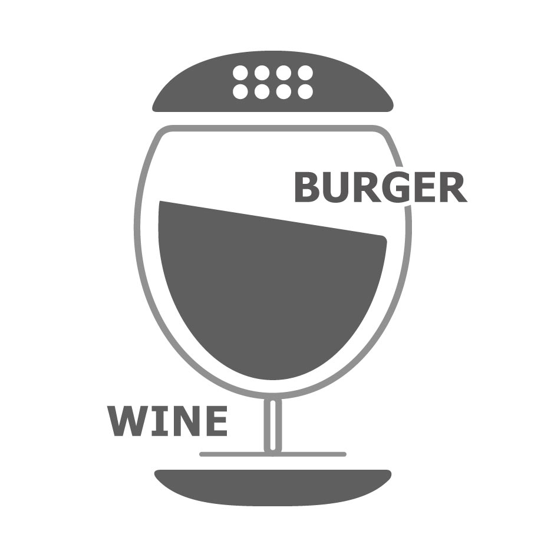

07
WORKS
LOGOMARK
Original Work

ふと立ち寄りたくなる、
遊び心あるHAMBARGERアイコン
-
THEME
【飲食店】HAMBARGER -
TARGET
20代～40代 学生/会社員/カップル -
TOOL
Illustrator
こだわりPOINT
- ハンバーガー×バーというテーマのもと、ハンバーガーとワイングラスのわかりやすいモチーフを使い4パターンのラフ画を作成し、Illustratorでデザインしました。
- "BAR"＝大人っぽいイメージを持つ方もいる中で、学生や20代でも親しみやすい遊び心のあるアイコンを意識しました。
- フォントはサンセリフ体をベースに制作しつつ、大人な落ち着きも演出するため"BAR"部分のみセリフ体にしています。
- 背景色は店舗の旗やショップカード、チラシなどで使用することを想定しています。落ち着きと大人っぽさを演出しつつ、温かみのある暖色で、モダンカジュアルな雰囲気に合わせた親しみやすさもプラスしました。
- ホームページでは背景色なしの白アイコンを使用し、用途に応じて使い分けています。
VARIATION
OTHER DESIGNS

こだわりPOINT
- ハンバーガー×バーというテーマのもと、ハンバーガーとワイングラスのわかりやすいモチーフを使い4パターンのラフ画を作成し、Illustratorでデザインしました。
- "BAR"＝大人っぽいイメージを持つ方もいる中で、学生や20代でも親しみやすい遊び心のあるアイコンを意識しました。
- フォントはサンセリフ体をベースに制作しつつ、大人な落ち着きも演出するため"BAR"部分のみセリフ体にしています。
- 背景色は店舗の旗やショップカード、チラシなどで使用することを想定しています。落ち着きと大人っぽさを演出しつつ、温かみのある暖色で、モダンカジュアルな雰囲気に合わせた親しみやすさもプラスしました。
- ホームページでは背景色なしの白アイコンを使用し、用途に応じて使い分けています。